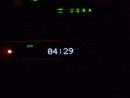
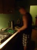
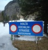

Maltatal Zima 2015
2015 · Rakúsko, Maltatal
Na vrany sa koukám rád, ale kurva, raději zdola..
Malta 2015
Je polovica februára a Horecsport vie, že niet načo čakať. Treba vyraziť iným smerom ako sú Tatry, lebo tam sa to vďaka sneženiu načas uzavrelo. Jasná alternatíva je Rakúsko, ešte jasnejšia je Maltatal. Podľa papierových predpokladov, akoby povedal Laci Borbély, by sme mali vyraziť a skutočnosť potvrdzuje teóriu, čiže štvorlístok Predseda, Horár, Fištrón a ja. Veď je to aj poriadny chlapský výlet. Nič pre baby, ale s tými si hlavu lámať nemusíme, lebo ich v klube nemáme J
Vo štvrtok večer dorazí Fištrónek. To je dobre, lebo s ním prichádza nie zákon, ale klobásy, pivo a iné dobroty. A odkaz od jeho ženy, ale ten tu rozoberať nebudem J. Jedno pivo si ešte večer doprajeme v našej obľúbenej krčme pod domom, ulíhame v čase, ktorý ani náhodou nie je priaznivý vzhľadom na to, že vstávame o 4,15. Strašné. To sa už dej prehupol do dňa č.1)
Dáme čaj, dobalíme pár blbostí a už aj volá Predseda, že máme ísť. Pakujeme všetko do Horárovho luxusného kombíka českej značky a je to len tak, tak. Tento výlet si to za volantom vyžere on. Nič sa nedá robiť, zdá sa, že to prijal, no ale prvé súvetie sme prehovorili asi tak o 7,30 keď sme sa všetci zobudili, dokonca aj Predseda spal a nekvakotal ako vždy. Horár tíško bojuje bez kávy za volantom, nalievame mu ju, až keď vstaneme. Ešte 2 hodky a sme tam. V doline našej obľúbenej. Toho roku sú - ako postupom dní zisťujeme podmienky snáď najlepšie, čo sem chodíme. Veľa ľadu, málo snehu. Takto sme to chceli! Vystúpime na parkovisku pri mýte, niečo pojeme a Horár navrhuje na dnes Aluhol. Je blízko, čas už pokročilý, ten kúsok pod ľad – asi 40min, sa aspoň trochu roztiahneme. Apropoo Aluhol, aby som ho predstavil, nie je až tak na rozohriatie, ako by sa moholo zdať. Vlastne je to robota až do tmy. Tak aj bolo. Veď je to WI4/240m. Ale každá dvojka sa s tým vysporiadala v kľude po svojom, bez zbytočných kecov a prieťahov. Dvojky su normal Horár-Predseda, Fištrón-ja. V týždni som kúpil nové lano, tak seniorská dvojka si ho bez slov privlastňuje, nepýtajú sa na náš názor. Nám zostáva modré, ktoré sa skladá z dvoch modrých J. Jedno trochu modré a druhé viac modré. Jasné ako facka. Dober modré...atď..no comment. Hlavne, že tí dvaja majú žlté a červené. Tak som si posťažoval, no a po zlanení sa už aj zotmelo a to je čas nájsť si nejaké miestečko, kde by sme zložili naše unavené hlávky po dnešnom dlhšom dni. Samozrejme niečo pojesť, čaju navariť, pár hltov horca prehnať trubkami. To sa aj darí a my sa viac menej vyspatí, trochu drevenní zobúdzame do dňa č.2)





Dáme čaj. Skontrolujeme končatiny či sú všetky. Sú. No a od toho sa môžeme odraziť. Pozvoľným tempom hľadáme smer. Hľadáme sa. Smerovanie. Smerovanie ďaľších krokov našej partie. S Horárom sme sa včera zhodli na jednom z troch dní v ľade. Gamseck. Ale ten to dnes nebude...to najlepšie na koniec. Dnes ešte nie sme pripravení, nedozrel čas ako hovorí klasik, hehe. Nuž ideme na horný koniec doliny. Až pod Klammfall 3/150m. Ono by sa zdalo, že je to ľahšie, ale po včerajšku nebude a ani nie je. „Trochu“ sme vytuhnutí. Až pod nástup vypotíme nejaké pozostatky zo včerajška. Postupne sa nám lepší. Ešte cestou hore nás zo dva krát ohluší strašný desivý zvuk z horného Maralmafall-u, ktorý sa postupne odlamuje a pripomína nám, že o čo tu ide... Jeden by sa posral, ale už sme zakalení. Ale sú naše vnemy natoľko otupené...? Neviem, radšej chcem už liezť, nech si nemusím lámať hlavu nad ničím. Pod nástupom opäť zvuk lámajúceho sa ľadu oproti...na to sa fakt nedá zvyknúť. Dnes je ľad opäť vo výbornej kodícíí-tak ako aj my J. Nuž teda je to rovnocenný boj, tak ale na záver máme predsa len trochu navrch a úspešne zlaníme až na chodník a na sklonku dňa sme na Parkplatz-i pri aute, sadá tma, do doliny sa vtiera chlad a ticho. A my sa pekne potichúčku zase stratíme na noc z povrchu... vyliezame až ráno, keď sa vonku rodí krásny deň č3)


Dáme čaj. Skontrolujeme postupne všetky končatiny. Predseda niečo v spacáku zablaboce, že ho bolia šľachy na prstoch, a že nejde, asi to hovoril iba sám sebe, lebo každý sa tvári, že ho nepočul, kto by už aj takú blbosť reagoval J. Mne sa zdá, že mám dosť dobúchané hánky, aj trochu opuchli..som radšej ticho, lebo je jasné, že každého niečo bolí, ale nič to. Dnes je predsa Gamsecktag J! Čiže pevné raňajky na parkovisku a hlavne potom pevné nervy. Ako som už hore uviedol, dnes je to jasné, čerešnička na torte v podobe Gamseck 4+/250m. Dnes je nedeľa a zdá sa, že do kostola, na futbal a do krčmy nepôjdeme, v doline je aj trochu pritesno. Áut pribúda tak ako boľavých miest na naších telách. Nakoniec predsa len zoberieme batohy, ktoré sme mimochodom večer ani nevybalili..čiže si spomenieme, že na dne zostali mokré laná obalené ľadom. Pár krát každé oplieskame o strom a sú opäť nachystané na lezenie J. Toto už neriešime moc, vyschnú až doma. Čiže zoberieme batohy, nejaký čaj, po jednej tyčinke, na ktorú aj tak nebude čas a kráčame dole dolinou k ľadu. Na zákrute sa nám krásne ukážu všetky 3 miestne klasiky. Kathedrale, Gamseck a Wintasun. Na stredný si dnes trúfame. Minulý rok bol Wintasun... Fištrónek pri pohľade na mohutnú ľadovú stuhu prehltol horkú slinu, tušil, že dnes bude very long day. A nielen on to tušil...Za pol hodku strmým svahom sme pod ľadom. Pod Gamseck 4+/250m. Práve vidíme v prvej dĺžke 3 talianov, celkom im to ide, ale je jasné, že budeme pod paľbou. Prvá dvojka – seniorská sa porúča a odchádza prvý Horár. Už je tak zo 20m odlezený a keď si všimnem, že sa Duškovi motá lano tak reku, že dobehnem a pomôžem mu ho rozmotávať, nech to má spád. A v tom to príde. Ľadový projektil letiaci od horných lezcov ma trafí do ruky, rovno do mojich obúchaných hánkov, rýchlosťou asi tak svetla, keby som nedal ruku inštinktívne na hruď, tak mi ľadový náboj preletí hruďou veskrz J. A kurva je to zlomené zanadávam, skrčím sa a ticho syčím ako had. Bolesť naozaj slušná. Fištrónek a Predseda na mňa kukajú, že čo to vyvádzam, ale vedia podľa zvukov, že tie zvuky, ktoré vydávam, nie sú zrovna zvuky z maďarského porno filmu a ani zvuky spokojného kúpeľného hosťa obaleného piešťanským bahnom... Stony preruši Fištrón otázkou „máš to zlomený, vole?“, pozrem na neho a hovorím si, takú radosť ti neurobím, aby sme odtiaľto vycúvali ty zubáč (candát česky).
„Nemám“odvetím a pridám otázku
“máš brufén?“
„mám“
„tak daj“
„jen si dej, já už sem si taky dal“
„šak ja ráno tiež už jeden“
„z dvěma to pude líp vole“
„daj brufen a drž hubu“
„tady máš pepíku“
„dik“
„tak já tedy tahám první dílku, lebo ty možná už nikam taky nepudeš Pepo“ J
Tu som si dovolil prepis autentického, normálneho rozhovoru dvoch alpinistov. Mať ich starosti.. Takže Fištrón sa pustil do prvej dĺžky naozaj s vervou jemu vlastnou a dľžku buchne v štýle ľadového elegána. Medzitým, mi bolesť ako tak ustúpi do leziteľného stavu a leziem k nemu.Ako si tak bezstarostne leziem za lanom vravím si, že aký je ten náš kluk z Vysočiny šikovný s akou ľahkosťou to vyliezol. No, ale dosť bolo zábavy a začína sa boj v ľade, na bolesť už ani nepomyslím – neni čas, vo vedení dĺžok sa striedame a z cesty postupne ukrajujeme meter za metrom, neustále pod paľbou ľadových úlomkov. Skutočne parádne polezenie v kvalitnom ľade, vrchné dve dĺžky svedčia o tom, v akom ľadovom amfíku sa nachádzame. Nevnímame nič iba jeden druhého, čakany, ľad, žiadne zbytočné myšlienky, čistá hlava. Ide nám to a ide to aj seniorom v druhej dvojke. Ti su pred nami, majú to už za tie roky v rukách. A v pažiJ. Je dolezené. Sme úplne hore, istený o strom, sme posledná dvojka v ceste, pozeráme do vyladnenej rokliny pod nami, krásna expozícia, hĺbka..sme ticho, hľadíme do tichej hlbočiny, sme spokojní, v hlave čisto. Toto je nozajský reset. A v tom Fištrón hľadiac dole vyriekne vetu tohto výletu. „na vrany sa pozerám rád, ale kurva radeji zdola“. Milujem tieto okamihy. Na 5x friško zlaňujeme a strácame sa v tme, do doliny prichádza noc a my padáme domov pod paplón. Volantom krúti neúnavný Horár...


Už aby to tu bolo zase.
A mimochodom, nebola zlomená.
Ivík
Pôvodná stránka: archív horecsport.sk